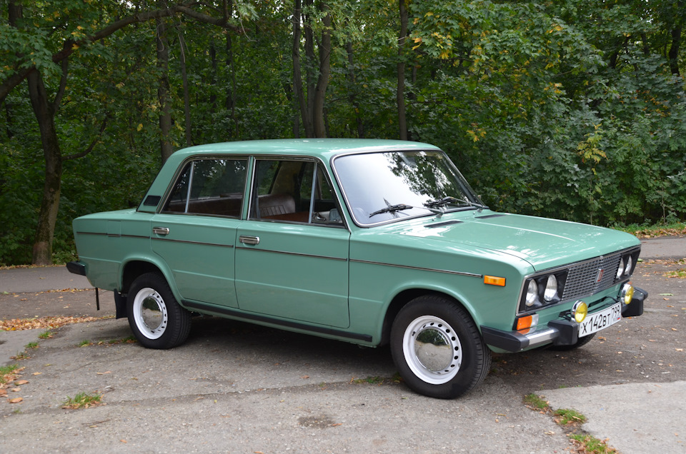
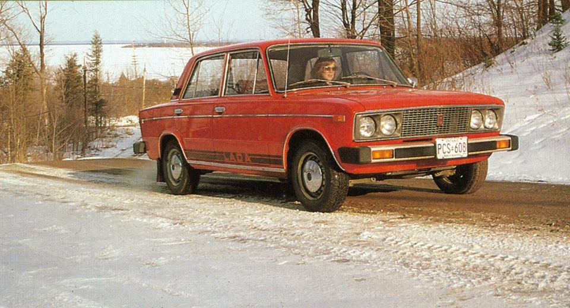
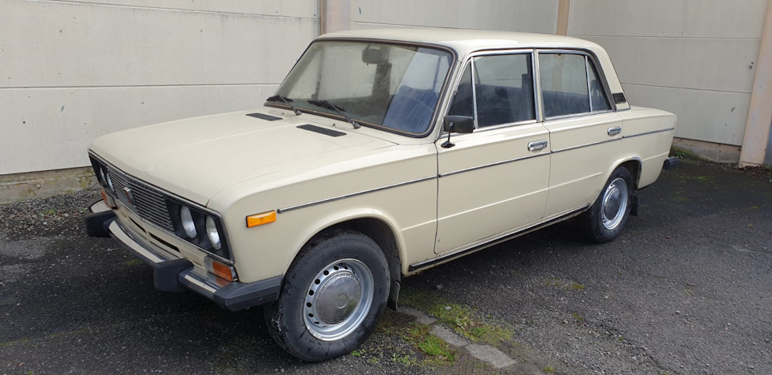
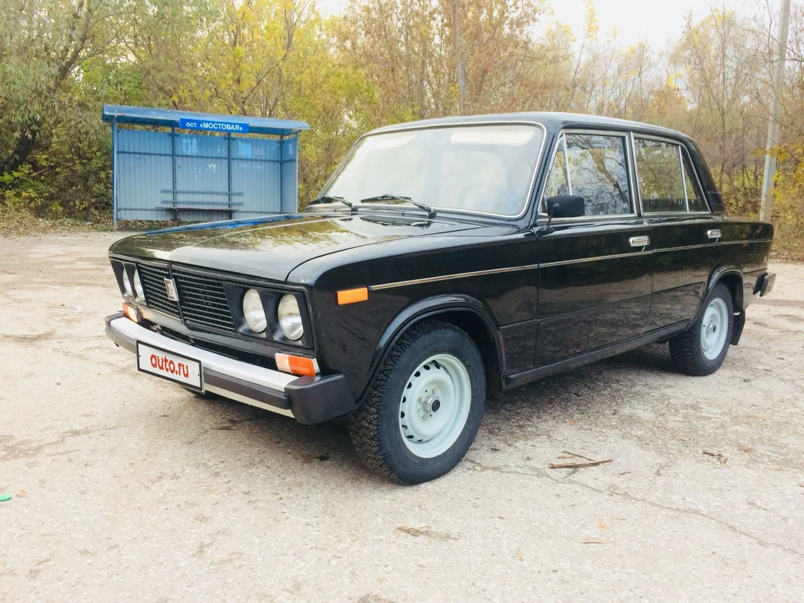
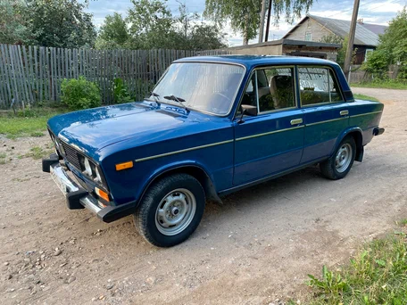
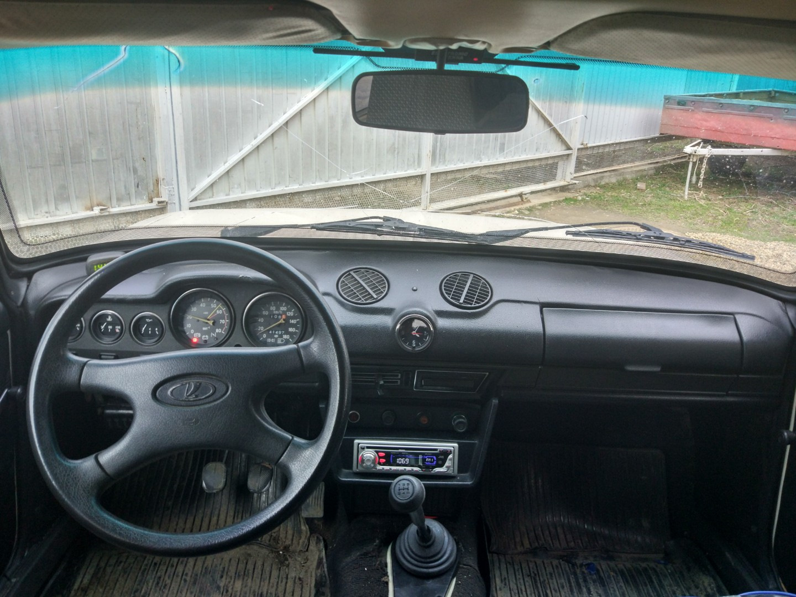
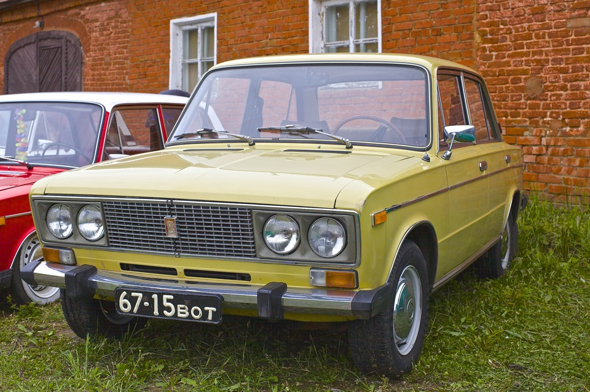
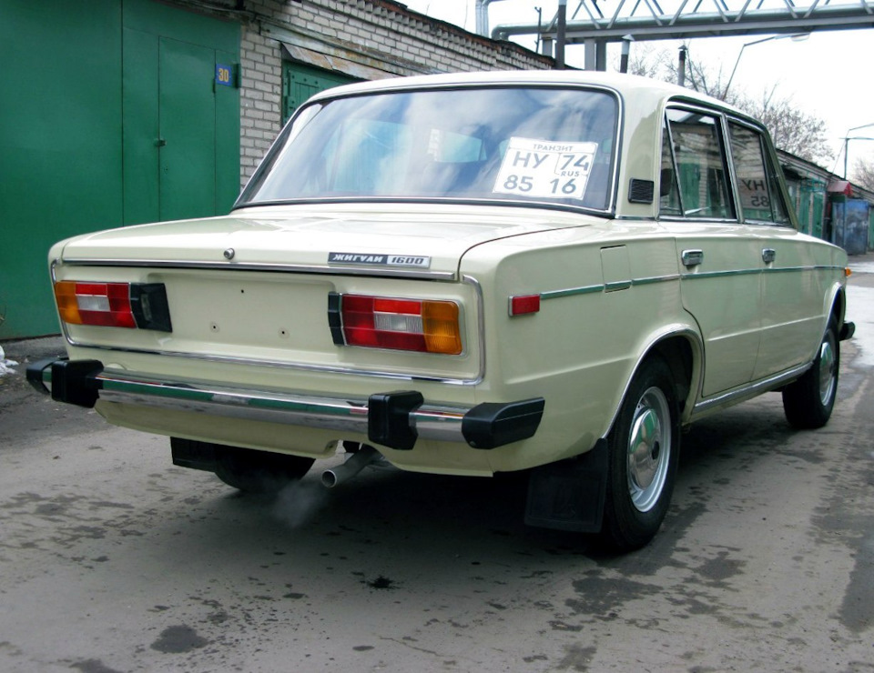
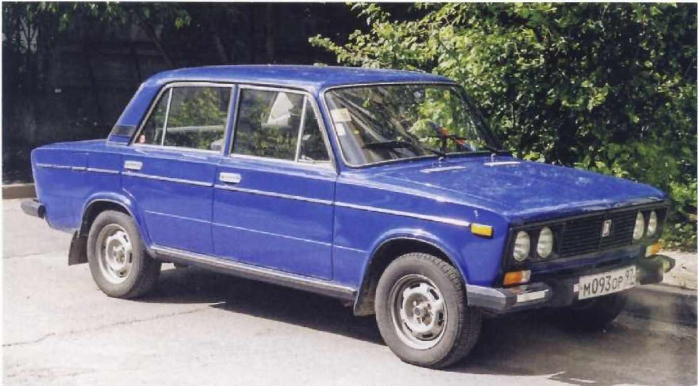
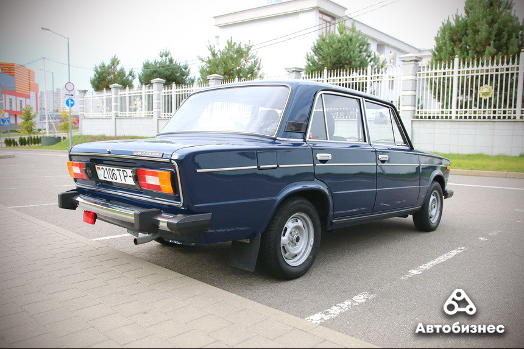

ВАЗ-2106 «Жигули» — советский и российский заднеприводный автомобиль III группы малого класса с кузовом типа седан, являющийся модернизацией ВАЗ-2103 и выпускавшийся Волжским автомобильным заводом с 1976 по 2001 год. В 1998 году производство было частично перенесено на предприятие «Рослада» в Сызрани (последний из выпущенных в Тольятти ВАЗ-2106 был собран 28 декабря 2001), в 2001 году — на Анто-Рус в Херсоне (Украина), а в 2000 году — на завод «ИжАвто» в Ижевске, где и продолжалось вплоть до снятия модели с конвейера в 2006 году. Один из самых массовых и популярных автомобилей в истории СССР, России и СНГ — всего произведено и собрано на разных заводах свыше 4,3 млн штук.
Разработка ВАЗ-2106 началась специалистами Центра стиля Волжского автозавода в 1974 году как «проект 21031» (по аналогии с только что освоенным в производстве ВАЗ-21011). Требования технического задания на обновление модели 2103 сводились к сокращению использования дорогостоящих хромированных и металлизированных деталей, а также к модернизации светотехники до последних европейских стандартов при минимуме затрат. Экстерьер автомобиля, разработанный в духе времени с использованием чёрных пластиков, был создан В. Антипиным, оригинальные задние фонари — В. Степановым. Изменениям подверглись передняя облицовка («очки» фар стали самостоятельными деталями, сама решётка изготавливалась из пластмассы и на ранних машинах дополнительно покрывалась хромом), задняя панель багажника (появилась крупная утопленная прямоугольная ниша под номерной знак), бампера (уменьшенные в размерах «клыки» стали цельнопластиковыми, как и ставшие самостоятельными деталями уголки бамперов), колпаки колёс, боковые указатели поворотов (более крупные прямоугольные, на ранних машинах на задних крыльях также были красные катафоты (на части экспортных машин они были выполнены как габаритные огни), идентичные по форме и симметричные по расположению на кузове повторителям), вентиляционные решётки, заводской знак (вписанный в чёрный прямоугольник; ранее прямоугольная эмблема уже применялась на ВАЗ-21011, но была более крупной и с красным фоном).
…Это было с модернизацией «шестёрки», автомобиля «2106». От нас требовалось обновить, омолодить его облик. Приступали с немалым смущением, как бы не испортить самую престижную итальянскую разработку, которой фиатовцы сами искренне гордились. Мелочь — задние фонари. Занимался ими Владимир Эрастович Степанов. Любовно, аккуратно, и они получились, что признано было и итальянцами.
Прошёл ещё ряд интересных предложений. Но тут заслон дизайнерам поставили производственники: спасибо, ребята, вы своё дело сделали: пуговицы сменили, хлястик укоротили, но глубже идти не надо, иначе переделка технологии слишком дорого обойдётся заводу.
— Из интервью с руководителем дизайн–центра ОАО «АвтоВАЗ» М. В. Демидовцевым «Красота спасает мир и автомобиль», 1993 г.
Новшества в интерьере затронули обивку (в частности, низ обивки дверей и кнопка рулевого колеса получили декоративную вязь с заводской эмблемой по центру) и подлокотники дверей (с 1977 года, до этого устанавливались подлокотники от ВАЗ-2103); сиденья получили цельновелюровый верх, у передних появились регулирующиеся по высоте подголовники (в удешевлённом исполнении (вариант 45) допускалась установка комплекта сидений от ВАЗ-2103, но тоже дополненного подголовниками спереди). Органы управления дополнили аварийной сигнализацией, подрулевым выключателем омывателя лобового стекла и реостатом освещения панели приборов. На консоли появилась отдельная контрольная лампа низкого уровня тормозной жидкости (на ВАЗ-2103 она совмещена с индикатором стояночного тормоза (мигание соответствует затянутому тормозу, постоянное свечение — низкому уровню жидкости в бачке). Улучшенные комплектации снабжались радиоприёмником, обогревом заднего стекла и красным противотуманным фонарём, крепившимся под задним бампером слева или справа (на экспортных праворульных экземплярах).
В задних фонарях ВАЗ-2106 впервые для советского автопрома были объединены в цельном корпусе секции указателей поворотов, габаритных огней, стоп-сигналов, огней заднего хода и катафотов. В. Антипин также отмечал, что случай, когда на легковом автомобиле оба задних фонаря конструктивно скомбинированы с освещением номерного знака, был на его памяти единственным в мировой практике и заслуживал отдельного патента.
…Потом была модернизация «трёшки», которую мы превратили в «шестёрку». Я был ведущим по этой теме, в конце концов, я занимался интерьером. Но философию под проект создавал я. 2103 начали выпускать и популярность была очень высокой у этой модели, в особенности у южных народов. «Ты же понимаешь, у меня хромированная штука, а как едет, да я такой, понимаешь!». Поэтому мы пошли по этому направлению и попытались внести декоративные орнаменты, которые усилили бы влечение потребителей к модели, подняли её немножко. Была изменена решётка, поставлены ободы фар и так далее. Но дорабатывал эту идею Антипин Володя, а я занимался, в основном, интерьером. Руль надо было сделать, сиденья, обивку дверей. Разработчиков у нас было в то время — раз-два и обчёлся.
— Из интервью с бывшим дизайнером ОАО «АвтоВАЗ» В. И. Пашко, 2013 г.
Для автомобиля был подготовлен вариант двигателя 2103, у которого по образцу модификации 21011 диаметр цилиндров был увеличен с 76 до 79 мм, что позволило достичь рабочего объёма 1,57 л. Новый длинноходный мотор показал на 12 % больший крутящий момент по сравнению с базовым (причём при существенно меньших оборотах), однако его максимальная мощность («брутто») по действующим в то время стандартам составила только 79 л. с. вместо расчётных 80-ти в силу ограниченных характеристик системы впуска, которую ради унификации с другими двигателями семейства оставили без изменений. Тем не менее, трансмиссию к новому двигателю всё же адаптировали, сначала создав специальную версию коробки передач, отличающуюся уменьшенными передаточными числами на первых трёх ступенях, а впоследствии комплектуя часть автомобилей редуктором с передаточным числом главной передачи, уменьшенным до 3,9. Доработкам подверглось и сцепление: было увеличено усилие диафрагменной пружины и увеличена площадь фрикционных накладок. Новый силовой агрегат с минимальными изменениями был использован для готовящейся в то время к производству модели ВАЗ-2121 «Нива» (другими заметными заимствованиями «Нивы» у ВАЗ-2106 стали комплект световой сигнализации (кроме фар) и подголовники передних сидений).
Подобно ВАЗ-2103, новинку планировалось сопровождать двумя менее мощными модификациями; для кузова уже традиционно предусматривалась возможность исполнения с правым расположением руля. Как и в случае с ВАЗ-21011, по маркетинговым соображениям появление модернизированной версии модели 2103 отнюдь не означало немедленного снятия с производства её предшественницы (более того, в 1982—1984 годах ВАЗ выпускал одновременно три «люксовых» автомобиля: 2103, 2106 и 2107). В свете этих обстоятельств первоначальное обозначение обновлённого автомобиля как 21031, несмотря на свою бесспорную логичность, выглядело малоперспективным для будущего использования и было заменено на 2106. Уже использовались позиции 21032, 21033, 21035 и 21036, пяти оставшихся пятизначных чисел заведомо не хватало для обозначения шести новых сочетаний трёх двигателей и двух лево- и праворульных кузовов, тем более с учётом возможного появления новых модификаций. «Освободившийся» же индекс 21031 был использован для обозначения «настоящей» модификации 2103 (ВАЗ-21031 не упоминается в официальном перечне модификаций модели 2103. Её условность подчёркивается даже тем фактом, что для идентификации этих автомобилей использовались обычные заводские таблички 2103, где нанесённые краской индексы модели и двигателя были просто дополнены выбитыми в металле цифрами «1»), укомплектованной новым двигателем (тоже временно обозначавшимся как «ВАЗ-21031») и выпущенной ради получения потребительских отзывов о нём очень небольшой партией (150—200 шт.) летом 1975 года (у ВАЗ-2106 первых партий двигатели на заводской табличке официально маркировались краской как «ВАЗ-21031»). Отличительной особенностью этих машин была красная или жёлтая окраска головки блока цилиндров двигателя в зависимости от версии установленной коробки передач (соответственно, с прежним рядом передаточных чисел или с адаптированным).
Самый первый автомобиль ВАЗ-2106 был собран на главном конвейере в канун наступающего 1976 года, однако массовый выпуск новинки начался на третьей линии конвейера лишь около полутора месяцев спустя — с 21 февраля. 28 декабря того же года экземпляр этой модели стал трёхмиллионным автомобилем, выпущенным Волжским автозаводом, а 3 июня 1978 года — четырёхмиллионным. В сентябре 1977 года модели был присвоен Знак качества. В июне 1979 г. один из ВАЗ-2106, отправленный в ЧССР, стал миллионным советским автомобилем, поставленным в страны СЭВ.
За время производства в автомобиль неоднократно вносились мелкие изменения. В 1977 году были слегка изменены дефлекторы отопителя, появилась мнемоника контрольных ламп в спидометре и в тахометре, в 1981 году её обновили, попутно заменив пиктограммами пояснительные надписи в других контрольных приборах. С 1980 г. все «жигули» стали оснащаться карбюратором «Озон» вместо прежнего «Вебера». В 1982 году видоизменился выключатель аварийной сигнализации. После снятия с производства модели 2103 на «шестёрках» в течение нескольких лет частично сменился комплект молдингов: поясные элементы снабдили концевыми фиксаторами, вместо хромированных нижних молдингов появились чёрные пластиковые, была исключена из оформления окантовка колёсных арок и хромирование ободков боковой светотехники — указателей поворотов и катафотов задних крыльев (последние были упразднены в 1987 г.). В 1986 году ВАЗ-2106 получил задние тормоза от ВАЗ-2105, а ещё через год и коробку передач от той же модели, ещё одним заимствованием от неё стали вентиляционные решётки задних стоек кузова. Некоторые упрощения претерпела схема электрооборудования: с 1987 г. встроенные в торцы передних дверей красные фонари были заменены катафотами, а с 1993 г. из схемы было исключено реле мигания контрольной лампы стояночного тормоза. К концу 80-х упразднили хромирование водостоков, в 1990 г. появились первые заводские машины со ступичными колпачками вместо колпаков дисков, позже отказались от грязезащитных козырьков между кузовом и бамперами. Фон заводского знака вместо вишнёвого стал чёрным. Из интерьера постепенно исчезли имитации под «хром» и «дерево», сошли на нет различные цветовые вариации обивки салона. В 1992 г. ради дальнейшего удешевления модели завод даже пытался отказаться от боковых молдингов, однако это «новшество» было быстро отменено. Во второй половине 90-х стали устанавливаться инерционные ремни безопасности, рулевое колесо от поздних версий семейства 2105, штатный противотуманный фонарь и опциональные передние электростеклоподъёмники. Экземпляры последних лет выпуска утратили хромировку ободков задних фонарей, очень часто не хромировалась и решётка радиатора. «Ижевские» машины комплектовались передними сидениями от ИЖ-2126.
«Шестёрка» довольно долгое время (с 1976 по 1982 год) оставалась наиболее престижной моделью в гамме «жигулей», заслужив репутацию автомобиля повышенной комфортабельности и надёжности.
Двигатель ВАЗ-2103. На части автомобилей для внутреннего рынка была упрощена система охлаждения двигателя — отсутствовал электровентилятор, а крыльчатка устанавливалась непосредственно на торец вала насоса охлаждающей жидкости. В постсоветские годы допускалась заводская комплектация бамперами от ВАЗ-2105. Экспортные экземпляры отличались улучшенной отделкой и мелкими изменениями в схеме электрооборудования, некоторые автомобили оснащались очистителями и омывателями внешних фар.

ВАЗ-21061-037
Исходно таким индексом предполагалось обозначать специальную версию для Канады (настоящим обозначением канадской комплектации впоследствии стал суффикс «-037»), предусматривавшую оснащение особенными бамперами — алюминиевыми, без клыков, с накладками и законцовками из чёрного пластика (в передний встраивались подфарники, также допускалась возможность установки гидроопор). В дальнейшем такими бамперами комплектовались и другие экспортные машины (для Нидерландов, Великобритании), а в модифицированном виде (без подфарников и с другим крепежом) они стали стандартными для ВАЗ-2121 (этот факт отражается в префиксе «21061-» наименований многих деталей бамперов «Нивы» в каталогах советских лет издания).
Экспортная модификация ВАЗ-2106 с правосторонним расположением органов управления.

ВАЗ-21063
Двигатель ВАЗ-21011 улучшенной комплектации, с датчиком давления масла и с электровентилятором вместо приводимой ремнём крыльчатки (в вариантном исполнении допускался привод ремнём). Эта модификация, выпускавшаяся до 1991 года обозначалась как LADA 1300 SL, после чего шильдик заменён на «Жигули» и с этим обозначением выпуск продолжался вплоть до снятия с конвейера в 1994 году (производство двигателей 2101 и 21011 было прекращено соответствующим приказом от 19 апреля 1994 г). Оснащалась, в отличие от прочих, системой выпуска отработавших газов с одним резонатором вместо двух. В начале 1990-х позиционировалась как "упрощённая модификация" ВАЗ-2106 и была наиболее бюджетным автомобилем АвтоВАЗа. Автомобили поздних лет выпуска могли комплектоваться бамперами от модели 2105.
Экспортная модификация ВАЗ-21061 с правосторонним расположением органов управления.
Модернизированная модификация с улучшенной комплектацией (люкс), выпускавшаяся в 1990—2001 г.г. (выпуск этой преимущественно экспортной модификации был прекращён, поскольку дальнейшее производство ВАЗ-2106 в Ижевске было призвано удовлетворить лишь сугубо внутренний спрос на эту модель, ещё остававшийся в те годы). От базовой модели отличалась более мощным генератором, пятиступенчатой коробкой передач, редуктором заднего моста с передаточным числом 3.9, бесконтактной системой зажигания, карбюратором «Солекс» (21053-1107010-20), галогеновыми фарами, травмобезопасным рулевым колесом от ВАЗ-2107, иной обивкой салона, иными сиденьями с подголовниками, а также штатным наличием заднего противотуманного фонаря и электрообогрева заднего стекла. Использовались колёса от ВАЗ-2105, большинство экземпляров комплектовалось алюминиевыми бамперами от той же модели, а часть экспортных машин, как и прежде, оснащалась модифицированными бамперами от ВАЗ-2121. Комплектация 21065-01 оснащалась двигателем от модели 2103, представляя собой улучшенную версию ВАЗ-21061. В 1999-2001 годах была выпущена партия автомобилей ВАЗ-21065 без небольших форточек в передних дверях. Часть автомобилей из этой партии оснащалась электростеклоподъёмниками передних дверей.

ВАЗ-21065 Жигули
Экспортная модификация ВАЗ-21063 с правосторонним расположением органов управления.

ВАЗ-2106 сборки 2004 года («ИжАвто»)
Двигатель ВАЗ-21067, отличающийся от базового наличием системы впрыска топлива с каталитическим нейтрализатором, что обеспечивало выполнение норм токсичности Евро-2.
ВАЗ-2106 «Турист»: Пикап со встроенной в кузов палаткой, созданный по заказу технической дирекции. Проект был отвергнут головной дирекцией завода, а единственный серебристый экземпляр перекрасили в красный цвет и впоследствии использовали в качестве внутризаводской технички.
ВАЗ-2106 «Полседьмого»: Одиночный экземпляр, изготовленный по специальному заказу, поступившему от Л. И. Брежнева или кого-то из его окружения после демонстрации опытных ВАЗ-2107 высшему руководству СССР в 1979 г. Помимо экспортных бамперов, отличался сиденьями и решёткой радиатора от 2107, а также доработанным под её установку капотом.
ВАЗ-21068: Носитель агрегатов и узлов периода доводки моторов ВАЗ-2108 и ВАЗ-21083.
Салон

Ранний автомобиль


Поздниий автомобиль

